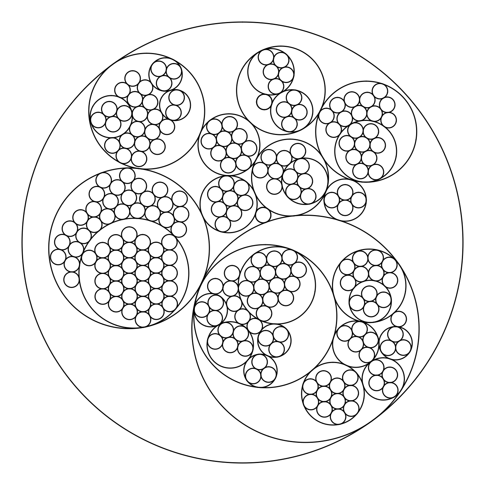
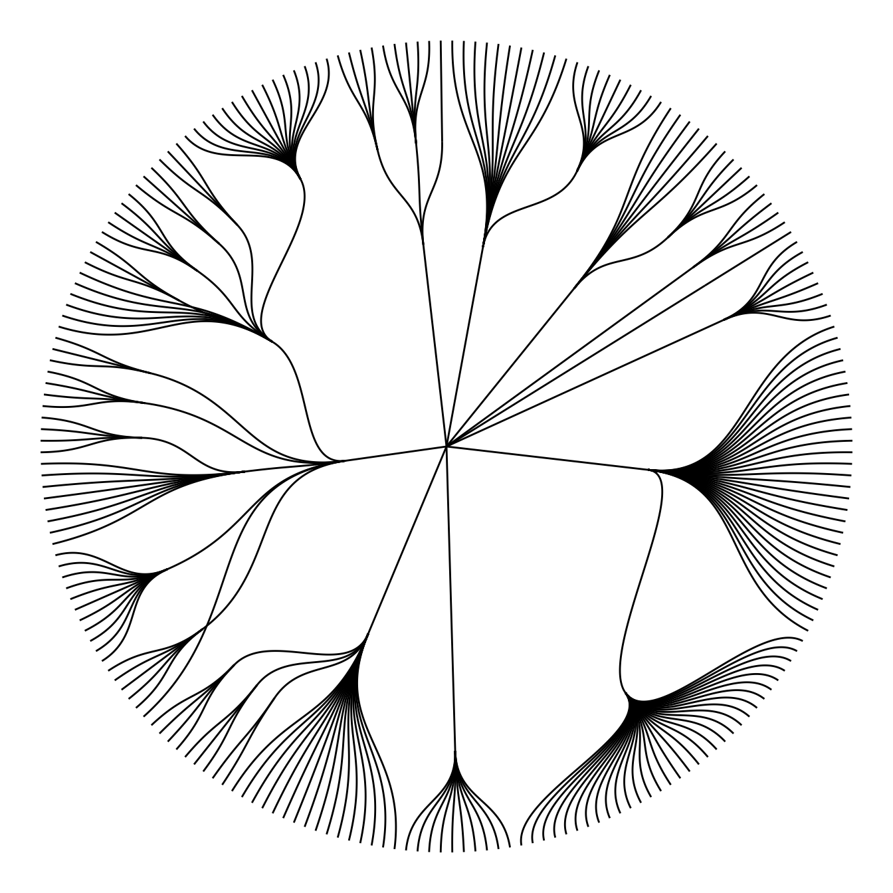
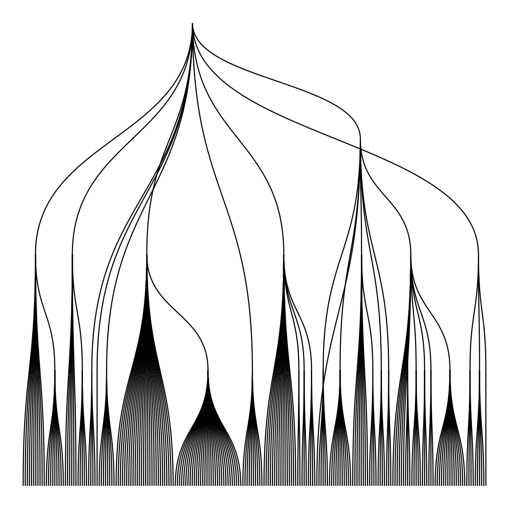
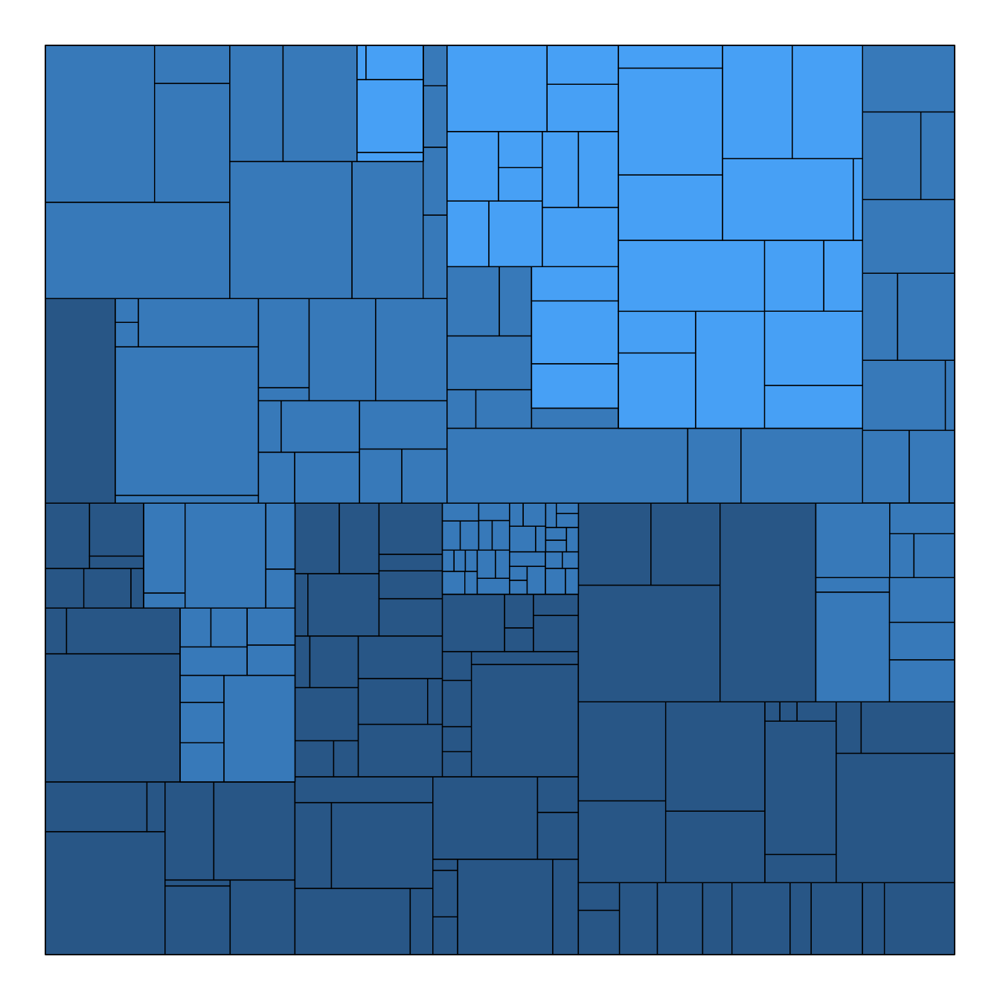
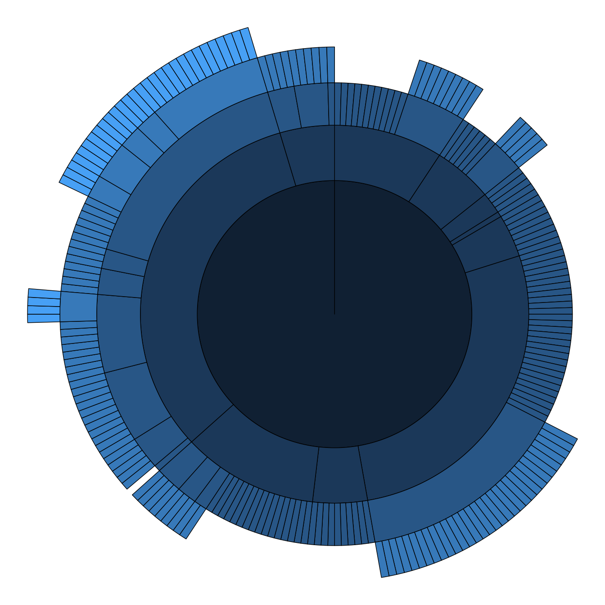
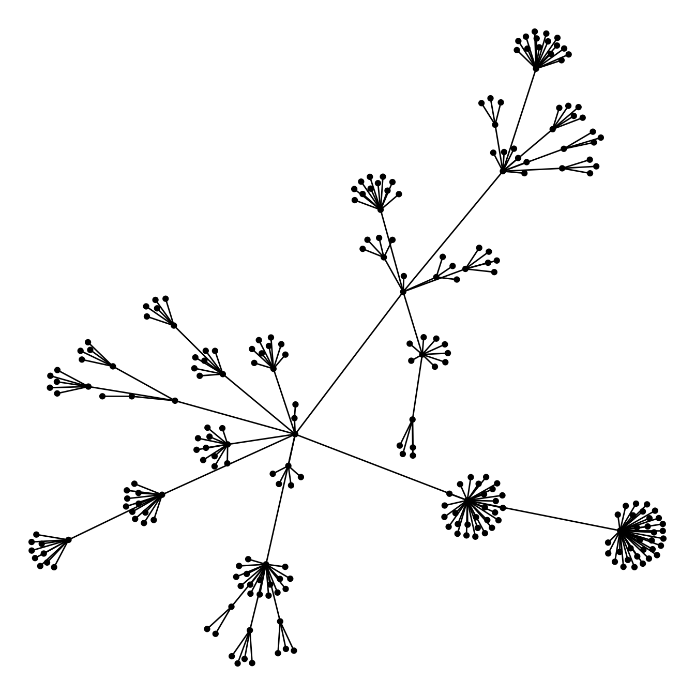

Input & concept
Circular packing represents a hierarchy: The biggest circle (origin of the hierarchy) contains several big circles (nodes of level 1), which contain smaller circle (level 2) and so on.. The last level is called leaf.
The input data is a list of edges between nodes. It should look more or less like the table beside. Moreover, we usually accompany this table with another one that gives features for each node.

Edge list
Most basic circular packing with ggraph
The ggraph package makes it a breeze to build a circular packing from an edge list. Here is an example based on the flare dataset proovded with the package.
The first step is to transform the dataframe to a graph object thanks to the graph_from_data_frame() function of the igraph package. Then, ggraph offers the geom_node_circle() function that will build the chart.

# Libraries
library(ggraph)
library(igraph)
library(tidyverse)
# We need a data frame giving a hierarchical structure. Let's consider the flare dataset:
edges <- flare$edges
# Usually we associate another dataset that give information about each node of the dataset:
vertices <- flare$vertices
# Then we have to make a 'graph' object using the igraph library:
mygraph <- graph_from_data_frame( edges, vertices=vertices )
# Make the plot
ggraph(mygraph, layout = 'circlepack') +
geom_node_circle() +
theme_void()Switching to another chart type
Note that the ggraph library allows to easily go from one type of representation to another. Indeed several types of representation are suitable for hierarchical data: dendrogram (can be circular), treemap, sunburst diagram or network!





ggraph(mygraph, layout='dendrogram', circular=TRUE) +
geom_edge_diagonal() +
theme_void() +
theme(legend.position="none")ggraph(mygraph, layout='dendrogram', circular=FALSE) +
geom_edge_diagonal() +
theme_void() +
theme(legend.position="none")ggraph(mygraph, 'treemap', weight = size) +
geom_node_tile(aes(fill = depth), size = 0.25) +
theme_void() +
theme(legend.position="none")ggraph(mygraph, 'partition', circular = TRUE) +
geom_node_arc_bar(aes(fill = depth), size = 0.25) +
theme_void() +
theme(legend.position="none")ggraph(mygraph) +
geom_edge_link() +
geom_node_point() +
theme_void() +
theme(legend.position="none")